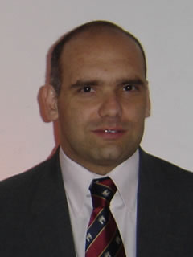

Ariel Angel Pedraza
Chacabuco 263 3 'F Tel. +54(0381) 4213710 Cel. +543815550724
Tucumán, (4000) email: arielpedraza@gmail.com

Summary
Gerenciamiento de Proyectos de Software. Experiencia para Administrar los Recursos Humanos y predisposición para asimilar e implementar tecnologías de avanzada. Modelado Orientado a Objetos, UML. Extenso entrenamiento en herramientas CASE: GENEXUS, y soluciones de software abierto sobre Linux. Diseño y Administración de Redes. Reingeniería de procesos.
Employment History
- Deciembre 2013 - Marzo 2014 Jefe de Sistemas Informáticos. Encargado del departamento de sistemas de la organización, tiempo completo - Tucumán, Argentina.
- 2002 - Nov. 2013 Jefe de Sistemas Informáticos en la Obra Social del Personal de Prensa de Tucumán, tiempo completo - Tucumán, Argentina.
- 1992 - 1999: Banco Empresario de Tucumán Coop. Ltdo. (Adquirido por Grupo Macro). Project Leader
Education
- Ingeniero en Sistemas de Informaci&ocute;n - UTN - Tucumán - Argentina-1995. www.utn.edu.ar
- Analista Universitario de Sistemas - UTN - Tucumán - Argentina-1993
Languages
Fluent in English